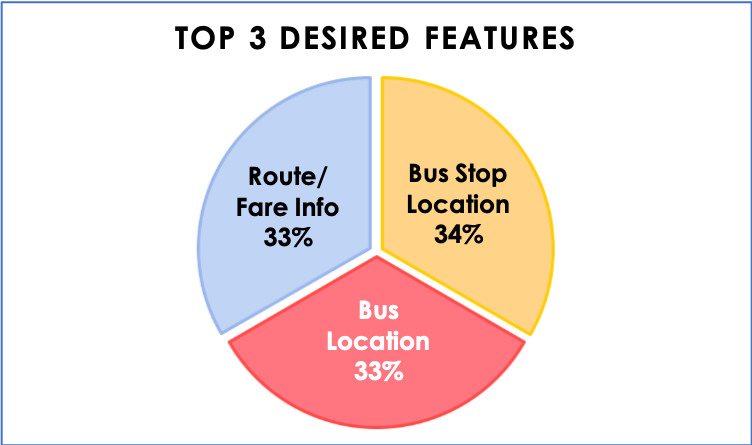
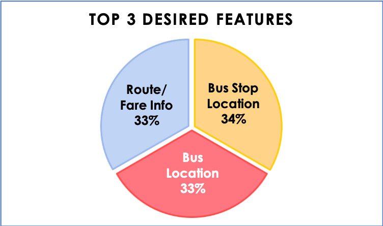

JEFF RAGLAND
UX designer & seasoned vet from Texas
UX designer & seasoned vet from Texas

A mobile app focused on using public transportation in a major city.
The major problem needing to be solved was identifying the next arriving bus and how much time a rider had to get there. Riders were complaining most about the Washington & State bus stop.
 

4.6 / 5 stars
Leverages the “Metro” name
Popular D.C. area transportation app
Requires network access
Screens are text heavy
Website is virtually useless
App use is not instantly intuitive
Free version has ads
Visually robust
Integrate social media with app
Integrated in WMATA marketing
Standalone apps with data available
Users from other cities using competitive apps
Electronic passes available on other transportation apps
Intuitive, feature-rich screens
Multiple options for transportation modes
Detailed info such as current location, time to nearest stop, routes, destinations
Elegant Apple Watch integration
4.4 / 5 stars
Loading speed not as fast as others
Focus is more on European market
Tourist destinations worldwide
Rich screen design built around maps
Highly acclaimed app - unique marketing opportunity
80% of sites load faster
Local commuters using other transportation apps
Three tries to get user stories focused on problem and eliminate scope creep. Extra features weren’t properly prioritized initially.
Third version more focused on creating MVP. Additional features for trip planning, saving favorites, or buying tickets pushed into lower priorities.

Lots of nice to have options not necessary in an MVP
Still unnecessary features and not focused on Washington & State bus stop

More focused on problem bus stop but still includes additional info and layout is tight


Problem solution is last in the visual hierarchy
Unnecessary features for an MPV
Arriving bus info lost in hierarchy
Color use not effective
Next arriving bus info now first in visual hierarchy
Bus info now full width
Unnecessary features removed
Bus info list spacing is to tight
Next arriving bus info now first in visual hierarchy
More spacing for bus info list
Added directional heading to bus info list
Added refresh icon